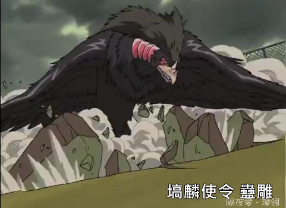

『十二国記』と『山海経』
公開日：
小野主上がなかなか新刊を出してくれないので、『山海経』などを繰りながら、『十二国記』の妖魔・妖獣の復習をしようと思います。
妖魔
『十二国記』では、窮奇（きゅうき）、欽原（きんげん）、蠱雕（こちょう）、天犬（てんけん）、饕餮（とうてつ）、飛鼠（ひそ）、賓満（ひんまん）などの妖魔が登場します。「賓満」だけはわかりませんでしたが、多くは『山海経』に登場するようです。
あとに出てくる妖獣との違いは、「（人間が）馴らして飼えるかどうか」だとされています。
饕餮（とうてつ）
『山海経』にはでてきませんが、四凶に数えられる中国ではおなじみの怪物です。たとえば『春秋左氏伝』文公十八年などに登場します。
舜臣堯，賓于四門，流四凶族。渾敦、窮奇、檮杌、饕餮，投諸四裔，以禦螭魅。
作中では泰麒が饕餮を下して、使令「傲濫（ごうらん）」にすることに成功しています。そういえば古代中国の青銅器に「饕餮文」というのもありましたね。
窮奇（きゅうき）
四凶の一角であるにもかかわらず、作中ではわりと雑魚キャラ扱い。饕餮となぜ差がついた――！ 『山海経』では西山経にその名前が見えます。
又西二百六十里，曰邽山。其上有獸焉，其狀如牛，蝟毛，名曰窮奇，音如獋狗，是食人。濛水出焉，南流注于洋水，其中多黃貝，蠃魚，魚身而鳥翼，音如鴛鴦，見則其邑大水。――西山経
（邽山の上に獣がいる。その姿は牛のようで、ハリネズミのような毛をもつ。名前を窮奇といい、イヌが吠えるように鳴く。ヒトを食う。）
また、海内北経にも同じ名前が見えます。こちらの方が広く流布している姿のようです。
窮奇狀如虎，有翼，食人從首始，所食被髮，在蜪犬北。一曰從足。――海内北経
（窮奇はトラの姿をしており、翼をもつ。人を食うが、そのときは頭から食べ始める）
後半の訳はよくわからないけれど、高馬氏訳では「食われる人は髪ふりみだしている」となっている。"被髪"は「結わないで自然に垂らした髪」のことを指すともいうので、「髪をちゃんとしてるやつは食われないよ」という注意書きにも見える。
蠱雕（こちょう）

アニメ版ではしょっぱなに登場する怖い鳥「蠱雕」は『山海経』の南山経に登場。
又東五百里，曰鹿吳之山，上無草木，多金石。澤更之水出焉，而南流注于滂水。水有獸焉，名曰蠱雕，其狀如雕而有角，其音如嬰兒之音，是食人。――南山經
（鹿呉の山から澤更の水が流れ、南の滂水に注いでいる。この川には獣がいて、名を蠱雕という。角のあるワシの形をしており、赤子のような声で鳴く。人を食う）
褐狙（かっそ）
褐狙と酸與は『図南の翼』で登場。アニメ化はよ。
偏が異なりますが、たぶんこれがモチーフなのではないでしょうか。
又《東次四經》之首，曰北號之山，臨于北海。有木焉，其狀如楊，赤華，其實如棗而無核，其味酸甘，食之不瘧。食水出焉，而東北流注于海。有獸焉，其狀如狼，赤首鼠目，其音如豚，名曰猲狙，是食人。有鳥焉，其狀如鷄而白首，鼠足而虎爪，其名曰鬿雀，亦食人。――東山経
（狼の姿をし、首は赤く、ネズミの目をもつ。声は豚のようで、ヒトを食う）
酸與（さんよ）
又南三百里，曰景山，南望鹽販之澤，北望少澤，其上多草、藷藇，其草多秦椒，其陰多赭，其陽多玉。有鳥焉，其狀如蛇，而四翼、六目、三足，名曰酸與，其鳴自詨，見則其邑有恐。――北山經
（四つの翼、六つの目、三本の足をもつ蛇、名を酸與という。高馬訳「鳴くときはわが名を呼ぶ。これが現れるとその邑に恐慌が起こる」）
"詨"は辞書引いてもよくわかんなかったが（もっといい辞書ほしいな）、呼び交わす、叫ぶ、オノマトペみたいな意味らしい（知らんけど）。“恐”の原義は「突き通して穴をあける作業」。“有恐”の意味はよく分からない。
朱厭（しゅえん）
兵乱を予兆する妖魔。
又西四百里，曰小次之山，其上多白玉，其下多赤銅。有獸焉，其狀如猿，而白首赤足，名曰朱厭，見則大兵。――西山經
（サルのような姿をして、首が白く足は赤い。名前は朱厭。これを見かけた土地では大軍の襲撃を受ける）
天犬（てんけん）
天犬も兵乱を予兆する妖魔。
有巫山者。有壑山者。有金門之山，有人名曰黃姖之尸。有比翼之鳥。有白鳥青翼，黃尾，玄喙。有赤犬，名曰天犬，其所下者有兵。――大荒西經
馬腹（ばふく）
又西二百里，曰蔓渠之山，其上多金玉，其下多竹箭。伊水出焉，而東流注于洛。有獸焉，其名曰馬腹，其狀如人面虎身，其音如嬰兒，是食人。――中山經
（馬腹は人面でトラの体をもち、嬰児のように鳴く。人を食べる）
飛鼠（ひそ）
又東北二百里，曰天池之山，其上無草木，多文石。有獸焉，其狀如兔而鼠首，以其背飛，其名曰飛鼠。澠水出焉，潛于其下，其中多黃堊。――北山經
（ウサギのようだが、首から上はネズミ。その背でもって飛ぶ。名前を飛鼠という）
“以其背飛”は意味がとれない。『デジタル大辞泉』では“コウモリの別名”とされているが、ぐぐるとモモンガの画像が大量に現れて癒される( *´艸｀)
妖獣
妖獣は人間か飼いならせるため、騎獣としても利用されます。作中では「吉量（きつりょう）」、「三騅（さんすい）」、「騶虞（すうぐ）」などが登場します。多くは『山海経』に登場しますが、残念ながら「赤虎（せっこ）」だけは見つかりませんでした。
吉量（きつりょう）
犬封國曰犬戎國，狀如犬。有一女子，方跪進柸食。有文馬，縞身朱鬣，目若黃金，名曰吉量，乘之壽千歲。――海內北經
三騅（さんすい）
有蓋猶之山者，其上有甘柤，枝幹皆赤，黃葉，白華，黑實。東又有甘華，枝幹皆赤，黃葉。有青馬。有赤馬，名曰三騅。有視肉。――大荒南經
騶虞（すうぐ）
林氏國有珍獸，大若虎，五彩畢具，尾長於身，名曰騶吾，乘之日行千里。――海內北經
天馬（てんば）
又東北二百里，曰馬成之山，其上多文石，其陰多金玉。有獸焉，其狀如白犬而黑頭，見人則飛，其名曰天馬，其鳴自䚯。有鳥焉，其狀如烏，首白而身青、足黃，是名曰鶌鶋，其鳴自詨，食之不飢，可以已寓。――北山經
駮（はく）
又西三百里，曰中曲之山，其陽多玉，其陰多雄黃、白玉及金。有獸焉，其狀如馬而白身黑尾，一角，虎牙爪，音如鼓音，其名曰駮，是食虎豹，可以禦兵。有木焉，其狀如棠，而員葉赤實，實大如木瓜，名曰櫰木，食之多力。――西山經
北海內有獸，其狀如馬，名曰騊駼。有獸焉，其名曰駮，狀如白馬，鋸牙，食虎豹。有素獸焉，狀如馬，名曰蛩蛩。有青獸焉，狀如虎，名曰羅羅。――海外北經
孟極（もうきょく）
又北二百八十里，曰石者之山，其上無草木，多瑤碧。泚水出焉，而西流注于河，有獸焉，其狀如豹，而文題白身，名曰孟極，是善伏，其鳴自呼。――北山經
鹿蜀（ろくしょく）
又東三百七十里，曰杻陽之山，其陽多赤金，其陰多白金。有獸焉，其狀如馬而白首，其文如虎而赤尾，其音如謠，其名曰鹿蜀，佩之宜子孫。怪水出焉，而東流注于憲翼之水。其中多玄龜，其狀如龜而鳥首虺尾，其名曰旋龜，其音如判木，佩之不聾，可以為底。――南山經